Procedural Generation of Earth-like Planets
Use arrow keys to navigate slideshow, and press F11 for fullscreen

Output:
six images for use as cube map
six images representing normal map
six images representing normal map
.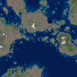 |
|||||||
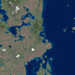 |
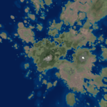 |
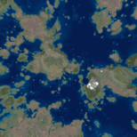 |
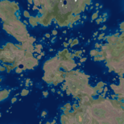 |
||||
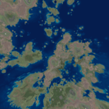 |
|||||||
| . | . | . | . | . | . | . | . |
Data Representation
Sphere is represented as 6 square arrays of 3d vectors
Imagine a cube overinflated until it is a sphere.
Each element in the array contains a 3d vector that represents the terrain elevation at a particular point on the sphere.
Each element in the array contains a 3d vector that represents the terrain elevation at a particular point on the sphere.
Recursively add "bumps"
Start with sphere represented by 6 square arrays of normalized vectors
Choose radius and location for bump (Marsaglia 1972 rejection method)
Use 0.5 + 0.5 * cosine(x) as bump profile, where x is distance from bump center scaled into range 0 - Pi
vector lengths representing elevation are adjusted to make the bumps
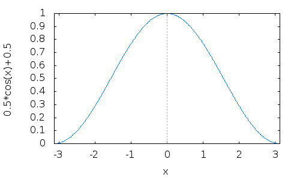
0.5 + 0.5 * cos(x) in the range of -Pi to Pi
Wed Aug 11 20:14:17 EDT 2021 Note: KdotJPG informs me of a more efficient polynomial that involves no sqrt() or trig functions which produces nearly the same curve:
- s = min(x^2, 1.0);
- (1 - s)^2
Here's a graph, the green line is (1 - s)^2, the blue line is 0.5 + 0.5 * cos(sqrt(s) * PI).
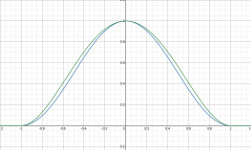
Bumps are recursively added
Each bump has smaller "sub-bumps" distributed around it, likely overlapping
The "sub-bumps" have sub-sub-bumps, and so on.
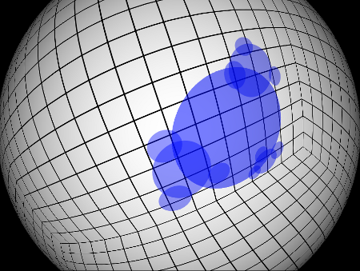
Modulate bumps with real terrain data...

Modulate bumps with real terrain data...
Each bump has a vector defining its position on the surface of the sphere
Compute quaternion to rotate bump to "front and center"
For each point within the "bump", apply this quaternion
Then the (x,y) components can be used directly (after scaling and offsetting)
to index terrain data.
Compute quaternion to rotate bump to "front and center"
For each point within the "bump", apply this quaternion
Then the (x,y) components can be used directly (after scaling and offsetting)
to index terrain data.
Then the (x,y) components can be used directly (after scaling and offsetting) to index terrain data.
|
|
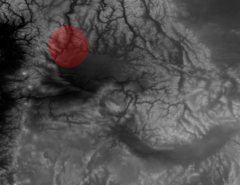 |

Since 0.5 + 0.5 * cos(x) approaches zero at the edges of the "bump", repeatedly applying such modulated terrain fades things together nicely.
Next, craters are optionally added.
Similar to "bumps" except:
Different profile
No terrain sampling
Still needs some work.
Different profile
No terrain sampling
Still needs some work.
Still needs some work.
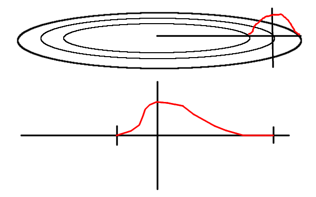
Abusing cosine some more
Next, heightmap data is painted into 6 temporary images
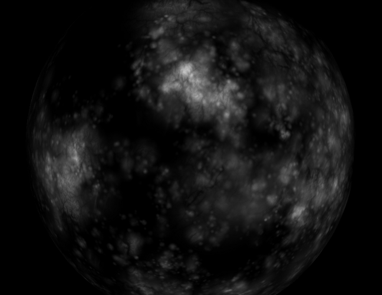
Height is scaled into the range 0 - 255, and RGB channels are set to height. This produces grayscale images where intensity is proportional to altitude.
From the heightmap, normal map images can be calculated.
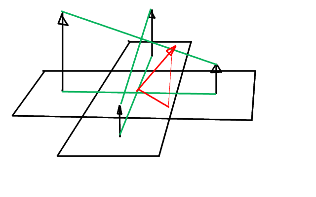
From adjacent pixels, (brightness == height) calculate dh/dx and dh/dy.
From dh/dx and dh/dy, calculate the normal vector:
x = dh/dx / 127.0f + 0.5;
y = dh/dy / 127.0f + 0.5;
z = 1.0f;
Note: if you want oceans, just check height against an arbitrarily
chosen "sea level" and if below sea level, the normal is simply set to
be straight out from the center of the planet.
x = dh/dx / 127.0f + 0.5;
y = dh/dy / 127.0f + 0.5;
z = 1.0f;
Note: if you want oceans, just check height against an arbitrarily chosen "sea level" and if below sea level, the normal is simply set to be straight out from the center of the planet.
Convert normal vectors into images
Encode each vector's x,y,z component into a pixel's red, green, and blue channels, respectively
red = normal.x * 255;
green = normal.y * 255;
blue = normal.z * 255;
red = normal.x * 255; green = normal.y * 255; blue = normal.z * 255;
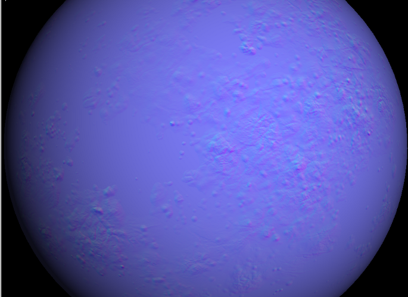
Next, real image colors need to be computed.
Simply mapping altitude to colors directly is unsatisfactory
For each vertex, an fBm noise value is calculated
Using altitude for one axis, and this fBm noise value for the 2nd
axis, we can index into 2D source images for land and water for above
and below sea-level cases, respectively.
For each vertex, an fBm noise value is calculated
Using altitude for one axis, and this fBm noise value for the 2nd
axis, we can index into 2D source images for land and water for above
and below sea-level cases, respectively.
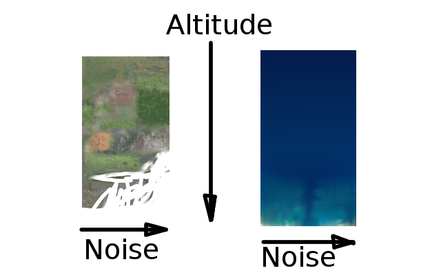
This gets us something like this:
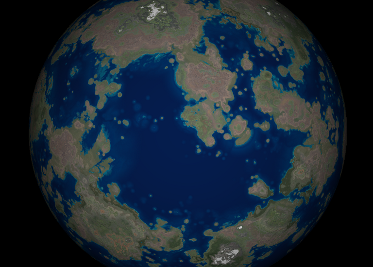
What about clouds?
Clouds are hard
fBm noise, simplex noise, Perlin noise by themselves are not satisfactory
Need to look into Worley noise
How to generate something like what is below? I have no good idea.
fBm noise, simplex noise, Perlin noise by themselves are not satisfactory
Need to look into Worley noise
How to generate something like what is below? I have no good idea.
How to generate something like what is below? I have no good idea.
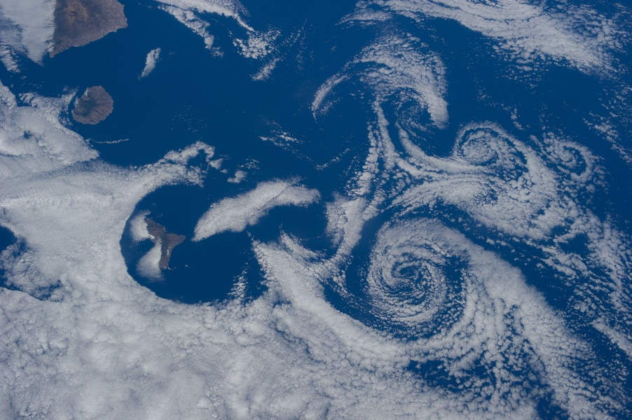
Clouds.... let's cheat
Sample NASA cloud image directly
After modifying to black and white, boosting contrast, and treating intensity as opacity
Modify gaseous-giganticus to have a "cloud mode"
Cloud mode samples the provided cloud image much as the "bumps" sample the terrain data
Combines with perlin noise
After modifying to black and white, boosting contrast, and treating intensity as opacity
Modify gaseous-giganticus to have a "cloud mode"
Cloud mode samples the provided cloud image much as the "bumps" sample the terrain data
Combines with perlin noise
Cloud mode samples the provided cloud image much as the "bumps" sample the terrain data
Combines with perlin noise
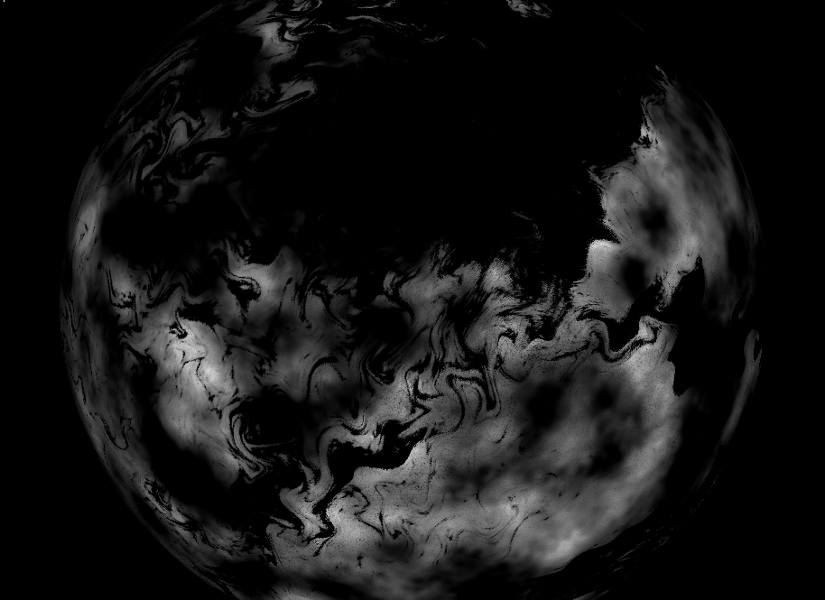
Composite cloud images with terrain images, et voila!
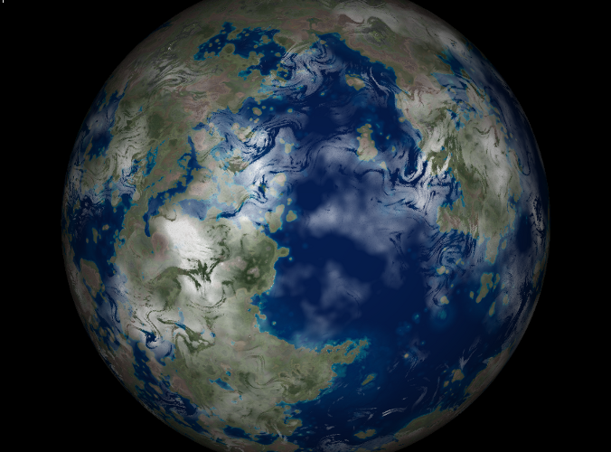
Using no sea-level, craters, and different terrain sample images, we can make moon-like planets:
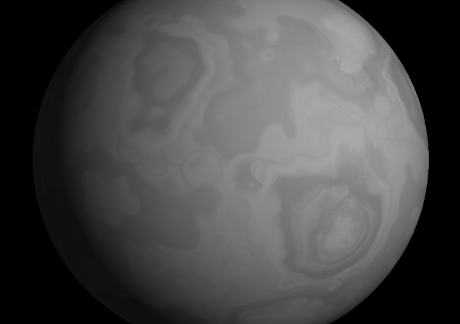
Some craters...
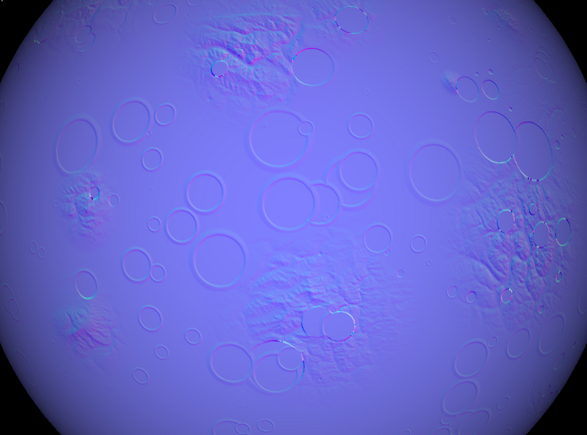